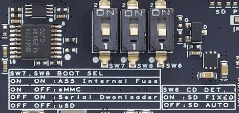
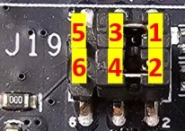
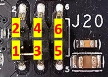

User InterfacesPinout and Signal DescriptionsPin SummarySBC3-IMX93 (Top) SBC3-IMX93 (Bottom) Signal Terminology DescriptionsThe following information provides descriptions of the terms used in the signal description table: Term Description I Input to the module O Output from the module O OD Open drain output from the module I OD Open drain input to the module, with mandatory PU (pull up) on module OD Open drain I/O Bi-directional Input/Output PU PU (pull-up) resistor on module PD PD (pull-down) resistor on module VDD_IN Main power source from carrier to module CMOS Logic input or output GBE MDI Differential analog signaling for Gigabit Media Dependent Interface LVDS DP Low Voltage Differential Signal for DisplayPort interface LVDS D-PHY Low Voltage Differential Signal for MIPI CSI-2 cameras and DSI displays LVDS M-PHY Low Voltage Differential Signal for MIPI CSI-3 cameras LVDS LCD Low Voltage Differential Signal for LCD displays LVDS PCIE Low Voltage Differential Signal for PCIe LVDS SATA Low Voltage Differential Signal for SATA TMDS HDMI Transition Minimized Differential Signal for HDMI displays USB DC coupled differential signaling for traditional (non-Superspeed) USB signals USB SS Differential signal for SuperSpeed USB signals USB VBUS 5V 5V tolerant input for USB VBUS detection 3.3V 3.3V Power Domain: Active while CARRIER_PWRON is high and CARRIER_SBY# is NOT active (i.e. both signals are high) 1.8V 1.8V Power Domain: Active while CARRIER_PWRON is high and CARRIER_SBY# is NOT active (i.e. both signals are high) 3.3Vsb 3.3V Power Domain: Active while CARRIER_PWRON is high (regardless of CARRIER_SBY#) 1.8Vsb 1.8V Power Domain: Active while CARRIER_PWRON is high (regardless of CARRIER_SBY#) DSIAll DSI signals are sent to a DSI-to-HDMI bridge. Note: DSI is routed to the ADV7535 and output to the HDMI connector. HDMIThe connector is located on the carrier, with a maximum resolution of up to 1080p. Note: HDMI is derived from DSI signals over the ADV7535/WLCSP-49, with support provided in the Yocto standard. LVDSThe connector is placed on the carrier Hirose DF13E-30DP Pin Description Pin Description 1 VDD 2 VDD 3 LVDS_A0_P 4 LVDS_A0_N 5 LVDS_A1_P 6 LVDS_A1_N 7 LVDS_A2_P 8 LVDS_A2_N 9 LVDS_A3_P 10 LVDS_A3_N 11 LVDSA_CLKP 12 LVDSA_CLKN 13 LVDS_CTRL_CLK 14 LVDS_CTRL_DAT 15 GND 16 GND 17 N/A 18 N/A 19 N/A 20 N/A 21 N/A 22 N/A 23 N/A 24 N/A 25 N/A 26 N/A 27 GND 28 GND 29 GND 30 GND J14: Backlight connector Pin Description 1 ENABLE 2 GND 3 12V_carrier 4 Backlight Control 5 5V_carrier MIPI CSI Camera22-pin CSI connector (RPI-compatible pinout) Pin Description 1 GND 2 CSI_DATA0_N_R 3 CSI_DATA0_P_R 4 GND 5 CSI_DATA1_N_R 6 CSI_DATA1_P_R 7 GND 8 CSI_CLOCK_N_R 9 CSI_CLOCK_P_R 10 GND 11 NI 12 NI 13 GND 14 NI 15 NI 16 GND 17 CAM_ENABLE 18 CAM_PWR_LED 19 GND 20 CSI_I2C_SCL_3V3 21 CSI_I2C_SDA_3V3 22 3V3_carrier AudioConnector located on carrier, standard 3.5 mm audio jack with mic LAN Ports2x RJ45 connectors for wired network interfacesThe network interfaces come from the SoC over 2 TI DP83867IR phy SDIOOne MicroSD card-slot is located on the carrier, acting as device storage or boot media. Pin Headers for Slow Speed SignalsGPIO Header (J6) Pin Description Pin Description 1 1V8_carrier 2 GND 3 GPIO_A_0 4 GPIO_B_0 5 GPIO_A_1 6 GPIO_B_1 7 GPIO_A_2 8 GPIO_B_2 9 GPIO_A_3 10 GPIO_B_3 11 GPIO_A_4 12 GPIO_B_4 13 GPIO_A_5 14 GPIO_B_5 15 N/A 16 GPIO_B_6 17 N/A 18 GPIO_B_7 19 GND 20 1V8_carrier Note: GPIO’s 4,5,6, and 7 are reserved for board functions. I2CAll I2C busses are located on header J44 Pin Description Pin Description 1 3V3_carrier 2 GND 3 I2C_A_SCL_3V3 4 I2C_B_SCL_3V3 5 I2C_A_SDA_3V3 6 I2C_B_SDA_3V3 SPIAll SPI busses are located on header J45 Pin Description Pin Description 1 SPI_A_SDI_IO0 2 SPI_B_SDI 3 SPI_A_SDO_IO1 4 SPI_B_SDO 5 SPI_A_CS0# 6 SPI_B_CS0# 7 SPI_A_CS1# 8 SPI_B_CS1# 9 SPI_A_SCK 10 SPI_B_SCK 11 VCC_OUT_IO 12 GND Note: During boot, SPI_A_SCK and SPI_A_CS0# must be kept low. CAN busCAN buses located on header JP5 & JP6, and the transceiver is already inline JP5 Pin Description 1 CAN_A_H_C 2 CAN_A_L_C 3 GND JP6 Pin Description 1 CAN_B_H_C 2 CAN_B_L_C 3 GND UARTSAll available UARTs are located on header J46 Pin Description Pin Description 1 UART_A_TX 2 UART_A_RX 3 UART_A_RTS# 4 UART_A_CTS# 5 UART_B_TX 6 UART_B_RX 7 UART_B_RTS# 8 UART_B_CTS# 9 UART_C_TX 10 UART_C_RX 11 1V8_carrier 12 GND 13 3V3_carrier 14 5V_carrier PWM and ADCPWM and ADC share J50 header Pin Description Pin Description 1 ADC_0 2 GND 3 ADC_1 4 GND 5 PWM_0 6 PWM_1 7 PWM_2 8 PWM_3 JTAGJTAG signals are located on header J36 and JP7 Pin Description Pin Description 1 1V8_carrier 2 JTAG_TMS 3 GND 4 JTAG_TCK 5 GND 6 JTAG_TDO 7 JTAG_RTCK 8 JTAG_TDI 9 GND 10 SYS_RST# JP7 PIN Description 1 JTAG_nTRST 2 JTAG_DEBUG_EN Onboard Jumpers and SwitchesConnector SpecificationsList of connectors and counterparts: DC Jack: 2.5mm LVDS Connector: 15P x 2, P=1.25mm wafer (DF13E-30DP-1.25V(52), Hirose) Backlight Connector: 5P, 2mm pitch MIPI-CSI: FPC, 22P, 0.5mm pitch (identical to Raspberry Pi) Header Pinouts:All headers are 2.0mm pitch, except for the ADC/PWM header, which uses 2.54mm pitch. J6: GPIO Header – 10P x 2, P=2.0mm J19: LCD Backlight Voltage Select – 3P x 2, P=2.0mm J44: I2C Header – 3P x 2, P=2.0mm J45: SPI Header – 6P x 2, P=2.0mm J45: UART Header – 7P x 2, P=2.0mm JP5/6: CAN Header – 3P x 1, P=2.0mm J50: ADC and PWM Header – 4P x 2, P=2.54mm Boot Select SwitchesThe i.MX93 can boot from different media; therefore, different boot media can be enabled via switch combinations: eMMC on-module storage SDIO SD Card located on the carrier Serial boot mode, used with Universal Update Utility (UUU) to provision the board SW7 and SW8 are used to select the boot media, with SW8 also used for SD card detection.  LCD Panel and Backlight Voltage SettingThe J19/J20 pinouts are labeled as shown below: The LCD backlight enable signal provides 5V/12V options via J19  - The LCD panel power offers a selection of 3/5/12 VDC via J20 